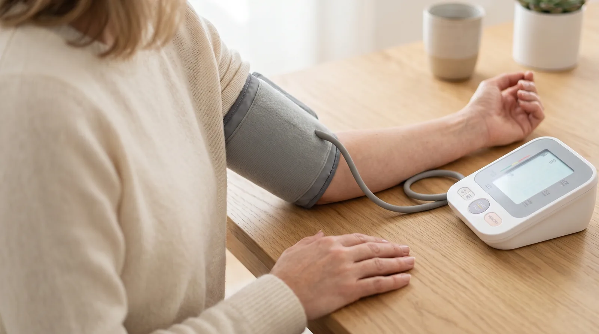

Cardiólogo en Elche · Clínica Elche Salud
Qué cifras son normales, por qué la edad no cambia el umbral y cuándo consultar

Es una de las preguntas más buscadas en internet y una de las más repetidas en consulta: «¿qué tensión es normal para mi edad?». La respuesta sorprende a mucha gente, porque las tablas por edades que circulan por la red no coinciden con lo que dicen las guías médicas.
No existe una tensión «normal según la edad». Las guías europeas actuales clasifican las cifras igual para todos los adultos, tengan 35 o 78 años.
Lo que sí cambia con los años es hasta dónde conviene bajarla y con qué rapidez, y eso se decide caso por caso.
Esta es la clasificación que se utiliza con la tensión medida en consulta, en adultos:
| Categoría | Cifras (mmHg) | Qué significa |
|---|---|---|
| No elevada | Menos de 120/70 | Situación óptima. Control periódico y hábitos. |
| Elevada | 120-139 / 70-89 | Zona intermedia. No es hipertensión, pero ya se asocia a más riesgo. Es donde más rinde actuar sobre los hábitos. |
| Hipertensión | 140/90 o más | Requiere confirmación con mediciones repetidas y valoración médica. |
Basta con que una de las dos cifras esté en una categoría para quedar clasificado en ella. Es decir, 145/80 ya es hipertensión, aunque la segunda cifra sea correcta.
Porque la tensión arterial sube con los años en casi todo el mundo. Las arterias pierden elasticidad y el corazón tiene que empujar contra un sistema más rígido. Por eso la tensión media de una persona de 70 años es más alta que la de una de 30.
El error está en confundir lo habitual con lo deseable. Esas tablas describen la media de la población, no un objetivo de salud. Que la mayoría de las personas de 70 años tenga 145/85 no convierte esa cifra en normal: significa que la hipertensión es muy frecuente a esa edad.
El riesgo cardiovascular asociado a la tensión es continuo: no hay un escalón mágico a partir del cual empiece el peligro. Cuanto más alta, más riesgo, en cualquier franja de edad.
La clasificación es la misma, pero el manejo se individualiza. Estos son los matices reales:
En la mayoría de adultos tratados se busca acercar la cifra alta a 120-129 mmHg. En personas mayores o frágiles, ese objetivo se ajusta según la tolerancia.
Con los años aumenta el riesgo de mareo al levantarse o de caídas si la tensión baja demasiado. Se busca el punto en que el beneficio compensa.
A partir de cierta edad es habitual que solo esté alta la cifra máxima, con la mínima normal o incluso baja. Se llama hipertensión sistólica aislada y también requiere tratamiento.
La decisión no depende solo del número, sino del riesgo cardiovascular global: colesterol, diabetes, tabaco, antecedentes y estado del corazón y los riñones.
Un detalle que genera mucha confusión: los umbrales de domicilio son más bajos que los de consulta, porque en casa se está más relajado y las cifras tienden a ser algo menores.
Por eso comparar la cifra de tu tensiómetro con la que te dijeron en la consulta no siempre tiene sentido: son escalas distintas.
Una parte importante de las tensiones «altas» que llegan a consulta son en realidad mediciones mal hechas. Las condiciones básicas:
Los de muñeca son menos fiables. El manguito debe ajustarse al grosor del brazo.
Sentado, con la espalda apoyada, los pies en el suelo y sin hablar durante la medición.
Apoyado en una mesa. Si cuelga, la cifra sale falsamente alta.
Dos medidas por la mañana y dos por la noche durante tres días seguidos, y se hace la media descartando el primer día.
Puedes ver el procedimiento completo y qué hacer con los resultados en nuestra página sobre hipertensión arterial.
Una medición aislada no diagnostica nada. La tensión varía a lo largo del día, con el estrés, el café, el sueño o el simple hecho de estar midiéndola. El diagnóstico se basa en registros repetidos, no en un susto puntual.
Si la media de varios días está por encima de 135/85 mmHg, lo razonable es llevar ese registro a una valoración médica. Allí se confirma el diagnóstico, se busca si hay una causa tratable detrás y se valora si la tensión ha dejado ya alguna huella en el corazón, los riñones o las arterias. Eso último es lo que realmente marca la conducta a seguir.
Una tensión por debajo de 120/70 mmHg en una persona que se encuentra bien no es un problema, sino lo deseable. La tensión baja solo tiene relevancia cuando produce síntomas: mareo al levantarse, sensación de desmayo o cansancio marcado. En ese caso lo que se estudia no es la cifra en sí, sino por qué aparecen los síntomas.
Nota: todo lo anterior se refiere a adultos no embarazadas. En la infancia los valores dependen de la edad y la talla, y en el embarazo se aplican criterios específicos.
Resumen visual de cómo medirla bien en casa y qué cifras importan.
Consulta cardiológica en Elche. Revisamos tu registro domiciliario, confirmamos el diagnóstico y valoramos su repercusión sobre el corazón.